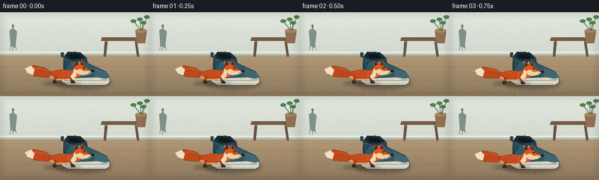
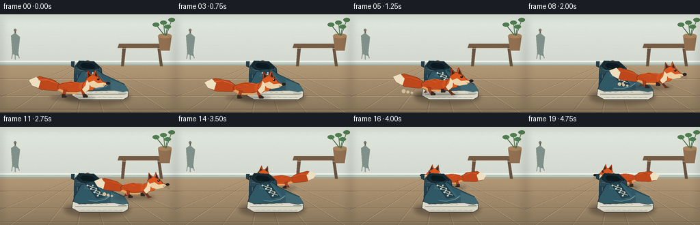

CODING AGENTS AS PIXEL WORLD MODELS
traex/GPT-5.6-Sol · dynamic_spatial_relationship_0028
点击播放 · 原生 RGB 像素
逐轮保存的候选
回放视频、检查图与代码变化。
每份候选均可单独播放。实际图片检查记录在下方工具轨迹中。
候选 01播放与检查图
点击播放 · 原生 RGB 像素

展开代码变化
--- 上一保存版本
+++ 本次保存版本
@@ -0,0 +1,307 @@
+from pathlib import Path
+import math, json
+import numpy as np
+from PIL import Image, ImageDraw, ImageFilter
+import artifact_io
+
+CASE_DIR = Path(__file__).resolve().parent
+W, H, N = 256, 144, 20
+AA = 3
+
+# Drawing is performed at 3x resolution and reduced for clean illustrated edges.
+def pt(x, y):
+ return (int(round(x * AA)), int(round(y * AA)))
+def box(x0, y0, x1, y1):
+ return (int(x0*AA), int(y0*AA), int(x1*AA), int(y1*AA))
+
+def ellipse(d, b, fill, outline=None, width=1):
+ d.ellipse(box(*b), fill=fill, outline=outline, width=max(1, int(width*AA)))
+def polygon(d, points, fill, outline=None, width=1):
+ q = [pt(*p) for p in points]
+ d.polygon(q, fill=fill)
+ if outline:
+ d.line(q+[q[0]], fill=outline, width=max(1,int(width*AA)), joint='curve')
+def line(d, points, fill, width=1, joint='curve'):
+ d.line([pt(*p) for p in points], fill=fill, width=max(1,int(width*AA)), joint=joint)
+
+def shadow_layer(im, ellipses, blur=4):
+ sh = Image.new('RGBA', im.size, (0,0,0,0))
+ sd = ImageDraw.Draw(sh)
+ for b, color in ellipses:
+ sd.ellipse(box(*b), fill=color)
+ sh = sh.filter(ImageFilter.GaussianBlur(blur*AA))
+ im.alpha_composite(sh)
+
+def draw_background(im, frame):
+ d = ImageDraw.Draw(im)
+ # warm, softly lit mudroom wall
+ for yy in range(0, 73*AA):
+ y = yy / AA
+ t = y / 73
+ c = (int(225-13*t), int(232-15*t), int(222-14*t), 255)
+ d.line([(0,yy),(W*AA,yy)], fill=c)
+ # baseboard
+ d.rectangle(box(0,68,W,75), fill=(188,199,187,255))
+ d.rectangle(box(0,68,W,70), fill=(238,241,232,255))
+ d.line([pt(0,74),pt(W,74)], fill=(145,156,146,255), width=AA)
+ # floor perspective gradient
+ for yy in range(75*AA, H*AA):
+ y=yy/AA; t=(y-75)/(H-75)
+ c=(int(178-39*t), int(152-32*t), int(118-25*t),255)
+ d.line([(0,yy),(W*AA,yy)], fill=c)
+ # floor board seams converging toward vanishing point
+ vp=(128,67)
+ for xb in [-52,13,68,112,150,191,247,308]:
+ line(d,[vp,(xb,144)],(112,93,72,110),.65)
+ line(d,[(vp[0]+1,vp[1]),(xb+2,144)],(216,190,151,90),.5)
+ for y in [94,119,139]:
+ # subtle horizontal plank join
+ line(d,[(0,y),(W,y)],(108,87,65,80),.55)
+ line(d,[(0,y+1),(W,y+1)],(208,179,139,60),.5)
+ # small wall pegs and hanging scarf at far left, kept subdued
+ ellipse(d,(20,21,24,25),(116,125,115,255))
+ line(d,[(22,24),(22,50)],(116,92,74,255),2)
+ polygon(d,[(16,31),(22,27),(29,33),(26,61),(18,58)],(127,145,137,255))
+ line(d,[(18,57),(17,65)],(108,126,120,255),1)
+ line(d,[(22,59),(22,66)],(108,126,120,255),1)
+ line(d,[(26,57),(28,64)],(108,126,120,255),1)
+ # narrow bench impression in background
+ polygon(d,[(174,43),(241,43),(239,49),(172,49)],(116,91,69,255))
+ polygon(d,[(179,48),(184,48),(181,76),(177,76)],(104,83,65,255))
+ polygon(d,[(230,48),(234,48),(238,76),(234,76)],(104,83,65,255))
+ line(d,[(177,50),(237,50)],(222,205,176,120),.7)
+ # plant pot at right edge, provides depth but doesn't compete
+ polygon(d,[(231,31),(251,31),(248,53),(234,53)],(145,112,82,255))
+ ellipse(d,(231,28,251,35),(167,132,94,255))
+ for ex,ey,cx,cy in [(239,12,241,30),(251,8,243,31),(228,15,240,30),(245,18,242,31)]:
+ line(d,[(cx,cy),(ex,ey)],(67,105,70,255),1.2)
+ ellipse(d,(ex-5,ey-3,ex+5,ey+3),(80,126,80,255))
+ # soft vignette
+ vign = Image.new('RGBA', im.size, (0,0,0,0)); vd=ImageDraw.Draw(vign)
+ vd.rectangle((0,0,W*AA,H*AA), outline=(52,45,38,30), width=5*AA)
+ im.alpha_composite(vign.filter(ImageFilter.GaussianBlur(5*AA)))
+
+def draw_shoe(im):
+ d=ImageDraw.Draw(im)
+ # fixed contact shadow anchors the central reference object
+ shadow_layer(im,[((94,111,190,132),(31,26,22,90)),((110,116,181,128),(20,18,18,75))],3)
+ d=ImageDraw.Draw(im)
+ # rear quarter / high ankle collar
+ polygon(d,[(108,105),(109,77),(116,68),(137,69),(148,79),(151,103)],
+ (43,73,83,255),(25,49,57,255),1)
+ # collar rim and dark opening
+ polygon(d,[(112,76),(117,69),(136,70),(145,78),(138,84),(120,82)],
+ (25,44,50,255),(20,35,40,255),1)
+ polygon(d,[(117,74),(121,71),(134,72),(140,77),(136,80),(121,79)],(12,26,31,255))
+ line(d,[(113,81),(129,84),(143,80)],(82,111,118,255),1.3)
+ # heel reinforcement
+ polygon(d,[(108,87),(122,87),(126,110),(108,113)],(35,62,72,255))
+ line(d,[(113,88),(113,107)],(83,111,117,255),1)
+ # main side panel and rounded toe
+ polygon(d,[(119,84),(142,81),(151,88),(164,94),(181,102),(187,111),
+ (183,118),(114,119),(106,112),(109,102)],
+ (49,88,101,255),(24,49,58,255),1.2)
+ # foxing/white sole
+ polygon(d,[(106,109),(116,113),(177,111),(188,113),(187,121),(180,125),
+ (116,125),(105,119)],(218,217,201,255),(73,71,65,255),1)
+ line(d,[(110,117),(182,117),(187,115)],(147,150,139,255),1)
+ line(d,[(115,122),(179,122)],(183,181,166,255),.8)
+ # toe cap highlight and textured rubber
+ polygon(d,[(162,96),(182,103),(188,112),(180,114),(162,111)],(65,103,114,255))
+ line(d,[(173,115),(184,115)],(116,117,108,255),.7)
+ for x in range(119,179,8):
+ line(d,[(x,122),(x+4,122)],(124,124,115,255),.55)
+ # eyelet strip
+ polygon(d,[(126,83),(141,84),(158,103),(148,107),(135,93),(123,91)],(58,99,111,255))
+ # tongue
+ polygon(d,[(124,82),(136,80),(153,103),(142,105)],(36,68,79,255),(24,48,56,255),.7)
+ # laces and metal eyelets
+ eyelets=[(128,86),(133,91),(138,96),(143,101)]
+ for j,(x,y) in enumerate(eyelets):
+ ellipse(d,(x-1.6,y-1.6,x+1.6,y+1.6),(207,207,192,255),(40,57,61,255),.5)
+ # alternating crossed cream laces
+ if j < len(eyelets)-1:
+ nx,ny=eyelets[j+1]
+ line(d,[(x+1,y),(nx+7,ny-1)],(224,221,201,255),1.1)
+ line(d,[(x+8,y+1),(nx,ny)],(224,221,201,255),1.1)
+ ellipse(d,(x+6.4,y-1.4,x+9.2,y+1.4),(204,204,189,255),(40,57,61,255),.4)
+ # stitched curved side emblem
+ line(d,[(130,108),(141,109),(154,106),(161,101)],(125,153,157,255),1)
+ line(d,[(130,110),(144,112),(158,108)],(29,61,70,255),.6)
+ # heel pull tab
+ polygon(d,[(108,78),(104,76),(104,69),(109,69)],(34,63,73,255),(22,42,49,255),.6)
+ # tiny seam stitches
+ for k in range(6):
+ x=115+k*8
+ line(d,[(x,114),(x+3,114)],(107,137,141,255),.55)
+
+def draw_fox(im, x, ground, scale, phase, facing=1, stride=1.0, crouch=0.0):
+ d=ImageDraw.Draw(im)
+ def T(p):
+ lx,ly=p
+ return (x + facing*lx*scale, ground + (ly + crouch)*scale)
+ def Poly(points, fill, outline=None, width=1):
+ polygon(d,[T(p) for p in points],fill,outline,width*scale)
+ def Ell(b, fill, outline=None, width=1):
+ x0,y0,x1,y1=b
+ p0=T((x0,y0)); p1=T((x1,y1))
+ ellipse(d,(min(p0[0],p1[0]),min(p0[1],p1[1]),max(p0[0],p1[0]),max(p0[1],p1[1])),fill,outline,width*scale)
+ def Line(points, fill, width=1):
+ line(d,[T(p) for p in points],fill,width*scale)
+
+ # running contact shadow changes with depth/scale
+ shadow_layer(im,[((x-35*scale,ground-2*scale,x+31*scale,ground+5*scale),(37,29,23,75))],2.4*scale)
+ d=ImageDraw.Draw(im)
+ # Tail sweep responds opposite the stride for lively locomotion.
+ sw=math.sin(phase)
+ tail_y=-17 + 3*sw*stride
+ Poly([(-17,-16),(-30,-25),(-50,-29+2*sw),(-66,-23+4*sw),(-61,-15+4*sw),
+ (-48,-10+2*sw),(-27,-9),(-15,-12)],(190,71,27,255),(104,49,27,255),.7)
+ Poly([(-66,-23+4*sw),(-61,-15+4*sw),(-52,-12+2*sw),(-49,-22+2*sw),(-55,-28+3*sw)],
+ (238,224,192,255))
+ # tail top glint
+ Line([(-24,-20),(-39,-25),(-52,-24+2*sw)],(229,113,54,220),1.0)
+
+ # gait: far pair first, dark red and slightly raised
+ a=math.sin(phase); b=math.sin(phase+math.pi)
+ rear_far_x=-14 + 7*a*stride; rear_far_y=-1-4*max(0,-a)*stride
+ front_far_x=15 + 8*b*stride; front_far_y=-1-4*max(0,-b)*stride
+ for hip,paw in [((-12,-10),(rear_far_x,rear_far_y)),((12,-11),(front_far_x,front_far_y))]:
+ Poly([(hip[0]-2,hip[1]),(hip[0]+2,hip[1]),(paw[0]+1,paw[1]-1),(paw[0]+5,paw[1]+1),(paw[0]-1,paw[1]+2)],
+ (111,49,29,255),(77,41,29,255),.5)
+
+ # torso and shoulder, with cream lower fur
+ Ell((-24,-22,19,-7),(198,75,29,255),(102,48,28,255),.8)
+ Poly([(-21,-12),(-9,-7),(9,-7),(19,-12),(16,-7),(2,-4),(-14,-5),(-24,-10)],(228,158,94,255))
+ Ell((7,-22,24,-7),(210,83,31,255))
+ # back highlight
+ Line([(-19,-20),(-5,-23),(11,-20)],(233,111,48,230),1.2)
+
+ # near legs are brighter and strongly articulate the run cycle
+ rear_x=-17 + 10*b*stride; rear_lift=5*max(0,-b)*stride
+ front_x=15 + 11*a*stride; front_lift=5*max(0,-a)*stride
+ def leg(hipx, pawx, lift):
+ knee=(hipx + (pawx-hipx)*.35, -5-lift*.35)
+ pawy=-1-lift
+ Poly([(hipx-2,-11),(hipx+3,-10),(knee[0]+2,knee[1]),(pawx+1,pawy-2),
+ (pawx+6,pawy),(pawx+5,pawy+2),(pawx-1,pawy+2),(knee[0]-2,knee[1])],
+ (177,63,26,255),(89,42,27,255),.55)
+ # black stocking/paw
+ Poly([(pawx-1,pawy-3),(pawx+2,pawy-3),(pawx+6,pawy),(pawx+5,pawy+2),(pawx-1,pawy+2)],(51,39,32,255))
+ leg(-13,rear_x,rear_lift)
+ leg(13,front_x,front_lift)
+
+ # neck ruff, head, ears
+ Poly([(14,-20),(20,-28),(29,-28),(34,-19),(28,-10),(18,-9),(12,-14)],
+ (218,91,34,255),(104,48,28,255),.7)
+ # far ear
+ Poly([(19,-27),(20,-39),(27,-31),(27,-25)],(180,65,27,255),(94,44,28,255),.7)
+ Poly([(21,-29),(21,-36),(25,-31)],(52,39,32,255))
+ # near ear
+ Poly([(27,-28),(31,-40),(37,-28),(35,-23)],(213,80,29,255),(94,44,28,255),.7)
+ Poly([(30,-29),(32,-37),(35,-29)],(54,39,32,255))
+ # head and pointed muzzle
+ Poly([(18,-27),(27,-33),(37,-29),(42,-23),(51,-20),(43,-15),(32,-13),(23,-16)],
+ (219,87,32,255),(96,45,28,255),.75)
+ # cream cheek and muzzle
+ Poly([(21,-21),(29,-24),(35,-20),(43,-21),(49,-19),(43,-15),(32,-13),(25,-15)],
+ (237,210,165,255))
+ # dark nose
+ Ell((47,-22,53,-18),(38,32,29,255))
+ # eye and brow
+ Ell((34,-28,37.5,-24.5),(28,25,23,255))
+ Ell((34.7,-27.5,35.7,-26.4),(247,225,163,255))
+ Line([(31,-30),(38,-29)],(119,48,26,255),.7)
+ # whiskers
+ Line([(43,-18),(54,-16)],(83,70,60,180),.45)
+ Line([(43,-17),(53,-13)],(83,70,60,150),.4)
+ # chest white blaze
+ Poly([(19,-25),(23,-19),(22,-11),(16,-6),(12,-11),(17,-17)],(239,220,183,255))
+ # sparse fur accents
+ Line([(-10,-21),(-2,-18)],(237,118,52,170),.6)
+ Line([(-20,-15),(-13,-13)],(145,54,28,160),.5)
+
+def fox_state(i):
+ # Establishment: fox stands clearly in the foreground, in front of shoe.
+ if i <= 3:
+ x = [108,109,108,109][i]
+ y = 121
+ s = 1.00
+ phase = -0.45 + i*.18
+ stride = .08
+ crouch = 1.4 if i==3 else 0
+ facing=1
+ behind=False
+ elif i <= 10:
+ t=(i-3)/7
+ e=t*t*(3-2*t)
+ x=109+96*e
+ y=121-17*e - 2*math.sin(math.pi*t)
+ s=1-.06*e
+ phase=(i-3)*2.05
+ stride=1.0
+ crouch=1.4*math.sin(phase*2)
+ facing=1
+ behind=False
+ elif i <= 15:
+ t=(i-10)/5
+ e=t*t*(3-2*t)
+ x=205-59*e
+ y=104-17*e
+ s=.94-.13*e
+ phase=(i-3)*2.05
+ stride=.95
+ crouch=1.0*math.sin(phase*2)
+ facing=1 if i<=12 else -1
+ # while passing the right edge, then disappearing behind the shoe
+ behind = i>=13
+ else:
+ t=(i-15)/4
+ x=146-3*(1-math.cos(math.pi*t))*.5
+ y=87 + .5*math.sin(t*math.pi)
+ s=.81
+ phase=25.0+i*.45
+ stride=.06
+ crouch=0
+ facing=-1
+ behind=True
+ return x,y,s,phase,facing,stride,crouch,behind
+
+def add_dust(im,i,x,y,s):
+ if not (5<=i<=12): return
+ d=ImageDraw.Draw(im)
+ age=(i%3)
+ for k in range(3):
+ r=(1.1+k*.55+age*.25)*s
+ cx=x-38*s-k*6*s
+ cy=y-1-k*1.2
+ ellipse(d,(cx-r,cy-r,cx+r,cy+r),(211,190,158,max(30,115-k*26)))
+
+def make_frame(i):
+ im=Image.new('RGBA',(W*AA,H*AA),(230,233,224,255))
+ draw_background(im,i)
+ x,y,s,phase,facing,stride,crouch,behind=fox_state(i)
+ if behind:
+ draw_fox(im,x,y,s,phase,facing,stride,crouch)
+ add_dust(im,i,x,y,s)
+ draw_shoe(im)
+ else:
+ draw_shoe(im)
+ add_dust(im,i,x,y,s)
+ draw_fox(im,x,y,s,phase,facing,stride,crouch)
+ # warm sun patch from upper left and modest global grain
+ rgb=im.convert('RGB').resize((W,H),Image.Resampling.LANCZOS)
+ arr=np.array(rgb,dtype=np.int16)
+ # Deterministic barely visible texture prevents flat synthetic color bands.
+ rng=np.random.default_rng(2900+i)
+ noise=rng.normal(0,0.75,arr.shape[:2])[:,:,None]
+ arr=np.clip(arr+noise,0,255).astype(np.uint8)
+ return arr
+
+def main():
+ frames=np.stack([make_frame(i) for i in range(N)],axis=0)
+ artifact_io.save(frames, CASE_DIR)
+ print('saved',frames.shape,frames.dtype,'range',frames.min(),frames.max())
+
+if __name__=='__main__':
+ main()
候选 02播放与检查图
点击播放 · 原生 RGB 像素

展开代码变化
--- 上一保存版本
+++ 本次保存版本
@@ -293,7 +293,7 @@
rgb=im.convert('RGB').resize((W,H),Image.Resampling.LANCZOS)
arr=np.array(rgb,dtype=np.int16)
# Deterministic barely visible texture prevents flat synthetic color bands.
- rng=np.random.default_rng(2900+i)
+ rng=np.random.default_rng(2900)
noise=rng.normal(0,0.75,arr.shape[:2])[:,:,None]
arr=np.clip(arr+noise,0,255).astype(np.uint8)
return arr
可观测工具轨迹
实际执行的命令与返回图片。
命令 1exit 0
/bin/bash -lc "cat prompt.txt && printf '\\n--- GENERATION_RULES ---\\n' && cat GENERATION_RULES.md"
命令 2exit 0
/bin/bash -lc "cat task_spec.json && printf '\\n--- FILES ---\\n' && find . -maxdepth 2 -type f -printf '%p\\n' | sort"
命令 3exit 0
/bin/bash -lc 'cat artifact_io.py'
命令 4exit 0
/bin/bash -lc "cat > generate.py <<'PY'
from pathlib import Path
import math, json
import numpy as np
from PIL import Image, ImageDraw, ImageFilter
import artifact_io
CASE_DIR = Path(__file__).resolve().parent
W, H, N = 256, 144, 20
AA = 3
# Drawing is performed at 3x resolution and reduced for clean illustrated edges.
def pt(x, y):
return (int(round(x * AA)), int(round(y * AA)))
def box(x0, y0, x1, y1):
return (int(x0*AA), int(y0*AA), int(x1*AA), int(y1*AA))
def ellipse(d, b, fill, outline=None, width=1):
d.ellipse(box(*b), fill=fill, outline=outline, width=max(1, int(width*AA)))
def polygon(d, points, fill, outline=None, width=1):
q = [pt(*p) for p in points]
d.polygon(q, fill=fill)
if outline:
d.line(q+[q[0]], fill=outline, width=max(1,int(width*AA)), joint='curve')
def line(d, points, fill, width=1, joint='curve'):
d.line([pt(*p) for p in points], fill=fill, width=max(1,int(width*AA)), joint=joint)
def shadow_layer(im, ellipses, blur=4):
sh = Image.new('RGBA', im.size, (0,0,0,0))
sd = ImageDraw.Draw(sh)
for b, color in ellipses:
sd.ellipse(box(*b), fill=color)
sh = sh.filter(ImageFilter.GaussianBlur(blur*AA))
im.alpha_composite(sh)
def draw_background(im, frame):
d = ImageDraw.Draw(im)
# warm, softly lit mudroom wall
for yy in range(0, 73*AA):
y = yy / AA
t = y / 73
c = (int(225-13*t), int(232-15*t), int(222-14*t), 255)
d.line([(0,yy),(W*AA,yy)], fill=c)
# baseboard
d.rectangle(box(0,68,W,75), fill=(188,199,187,255))
d.rectangle(box(0,68,W,70), fill=(238,241,232,255))
d.line([pt(0,74),pt(W,74)], fill=(145,156,146,255), width=AA)
# floor perspective gradient
for yy in range(75*AA, H*AA):
y=yy/AA; t=(y-75)/(H-75)
c=(int(178-39*t), int(152-32*t), int(118-25*t),255)
d.line([(0,yy),(W*AA,yy)], fill=c)
# floor board seams converging toward vanishing point
vp=(128,67)
for xb in [-52,13,68,112,150,191,247,308]:
line(d,[vp,(xb,144)],(112,93,72,110),.65)
line(d,[(vp[0]+1,vp[1]),(xb+2,144)],(216,190,151,90),.5)
for y in [94,119,139]:
# subtle horizontal plank join
line(d,[(0,y),(W,y)],(108,87,65,80),.55)
line(d,[(0,y+1),(W,y+1)],(208,179,139,60),.5)
# small wall pegs and hanging scarf at far left, kept subdued
ellipse(d,(20,21,24,25),(116,125,115,255))
line(d,[(22,24),(22,50)],(116,92,74,255),2)
polygon(d,[(16,31),(22,27),(29,33),(26,61),(18,58)],(127,145,137,255))
line(d,[(18,57),(17,65)],(108,126,120,255),1)
line(d,[(22,59),(22,66)],(108,126,120,255),1)
line(d,[(26,57),(28,64)],(108,126,120,255),1)
# narrow bench impression in background
polygon(d,[(174,43),(241,43),(239,49),(172,49)],(116,91,69,255))
polygon(d,[(179,48),(184,48),(181,76),(177,76)],(104,83,65,255))
polygon(d,[(230,48),(234,48),(238,76),(234,76)],(104,83,65,255))
line(d,[(177,50),(237,50)],(222,205,176,120),.7)
# plant pot at right edge, provides depth but doesn't compete
polygon(d,[(231,31),(251,31),(248,53),(234,53)],(145,112,82,255))
ellipse(d,(231,28,251,35),(167,132,94,255))
for ex,ey,cx,cy in [(239,12,241,30),(251,8,243,31),(228,15,240,30),(245,18,242,31)]:
line(d,[(cx,cy),(ex,ey)],(67,105,70,255),1.2)
ellipse(d,(ex-5,ey-3,ex+5,ey+3),(80,126,80,255))
# soft vignette
vign = Image.new('RGBA', im.size, (0,0,0,0)); vd=ImageDraw.Draw(vign)
vd.rectangle((0,0,W*AA,H*AA), outline=(52,45,38,30), width=5*AA)
im.alpha_composite(vign.filter(ImageFilter.GaussianBlur(5*AA)))
def draw_shoe(im):
d=ImageDraw.Draw(im)
# fixed contact shadow anchors the central reference object
shadow_layer(im,[((94,111,190,132),(31,26,22,90)),((110,116,181,128),(20,18,18,75))],3)
d=ImageDraw.Draw(im)
# rear quarter / high ankle collar
polygon(d,[(108,105),(109,77),(116,68),(137,69),(148,79),(151,103)],
(43,73,83,255),(25,49,57,255),1)
# collar rim and dark opening
polygon(d,[(112,76),(117,69),(136,70),(145,78),(138,84),(120,82)],
(25,44,50,255),(20,35,40,255),1)
polygon(d,[(117,74),(121,71),(134,72),(140,77),(136,80),(121,79)],(12,26,31,255))
line(d,[(113,81),(129,84),(143,80)],(82,111,118,255),1.3)
# heel reinforcement
polygon(d,[(108,87),(122,87),(126,110),(108,113)],(35,62,72,255))
line(d,[(113,88),(113,107)],(83,111,117,255),1)
# main side panel and rounded toe
polygon(d,[(119,84),(142,81),(151,88),(164,94),(181,102),(187,111),
(183,118),(114,119),(106,112),(109,102)],
(49,88,101,255),(24,49,58,255),1.2)
# foxing/white sole
polygon(d,[(106,109),(116,113),(177,111),(188,113),(187,121),(180,125),
(116,125),(105,119)],(218,217,201,255),(73,71,65,255),1)
line(d,[(110,117),(182,117),(187,115)],(147,150,139,255),1)
line(d,[(115,122),(179,122)],(183,181,166,255),.8)
# toe cap highlight and textured rubber
polygon(d,[(162,96),(182,103),(188,112),(180,114),(162,111)],(65,103,114,255))
line(d,[(173,115),(184,115)],(116,117,108,255),.7)
for x in range(119,179,8):
line(d,[(x,122),(x+4,122)],(124,124,115,255),.55)
# eyelet strip
polygon(d,[(126,83),(141,84),(158,103),(148,107),(135,93),(123,91)],(58,99,111,255))
# tongue
polygon(d,[(124,82),(136,80),(153,103),(142,105)],(36,68,79,255),(24,48,56,255),.7)
# laces and metal eyelets
eyelets=[(128,86),(133,91),(138,96),(143,101)]
for j,(x,y) in enumerate(eyelets):
ellipse(d,(x-1.6,y-1.6,x+1.6,y+1.6),(207,207,192,255),(40,57,61,255),.5)
# alternating crossed cream laces
if j < len(eyelets)-1:
nx,ny=eyelets[j+1]
line(d,[(x+1,y),(nx+7,ny-1)],(224,221,201,255),1.1)
line(d,[(x+8,y+1),(nx,ny)],(224,221,201,255),1.1)
ellipse(d,(x+6.4,y-1.4,x+9.2,y+1.4),(204,204,189,255),(40,57,61,255),.4)
# stitched curved side emblem
line(d,[(130,108),(141,109),(154,106),(161,101)],(125,153,157,255),1)
line(d,[(130,110),(144,112),(158,108)],(29,61,70,255),.6)
# heel pull tab
polygon(d,[(108,78),(104,76),(104,69),(109,69)],(34,63,73,255),(22,42,49,255),.6)
# tiny seam stitches
for k in range(6):
x=115+k*8
line(d,[(x,114),(x+3,114)],(107,137,141,255),.55)
def draw_fox(im, x, ground, scale, phase, facing=1, stride=1.0, crouch=0.0):
d=ImageDraw.Draw(im)
def T(p):
lx,ly=p
return (x + facing*lx*scale, ground + (ly + crouch)*scale)
def Poly(points, fill, outline=None, width=1):
polygon(d,[T(p) for p in points],fill,outline,width*scale)
def Ell(b, fill, outline=None, width=1):
x0,y0,x1,y1=b
p0=T((x0,y0)); p1=T((x1,y1))
ellipse(d,(min(p0[0],p1[0]),min(p0[1],p1[1]),max(p0[0],p1[0]),max(p0[1],p1[1])),fill,outline,width*scale)
def Line(points, fill, width=1):
line(d,[T(p) for p in points],fill,width*scale)
# running contact shadow changes with depth/scale
shadow_layer(im,[((x-35*scale,ground-2*scale,x+31*scale,ground+5*scale),(37,29,23,75))],2.4*scale)
d=ImageDraw.Draw(im)
# Tail sweep responds opposite the stride for lively locomotion.
sw=math.sin(phase)
tail_y=-17 + 3*sw*stride
Poly([(-17,-16),(-30,-25),(-50,-29+2*sw),(-66,-23+4*sw),(-61,-15+4*sw),
(-48,-10+2*sw),(-27,-9),(-15,-12)],(190,71,27,255),(104,49,27,255),.7)
Poly([(-66,-23+4*sw),(-61,-15+4*sw),(-52,-12+2*sw),(-49,-22+2*sw),(-55,-28+3*sw)],
(238,224,192,255))
# tail top glint
Line([(-24,-20),(-39,-25),(-52,-24+2*sw)],(229,113,54,220),1.0)
# gait: far pair first, dark red and slightly raised
a=math.sin(phase); b=math.sin(phase+math.pi)
rear_far_x=-14 + 7*a*stride; rear_far_y=-1-4*max(0,-a)*stride
front_far_x=15 + 8*b*stride; front_far_y=-1-4*max(0,-b)*stride
for hip,paw in [((-12,-10),(rear_far_x,rear_far_y)),((12,-11),(front_far_x,front_far_y))]:
Poly([(hip[0]-2,hip[1]),(hip[0]+2,hip[1]),(paw[0]+1,paw[1]-1),(paw[0]+5,paw[1]+1),(paw[0]-1,paw[1]+2)],
(111,49,29,255),(77,41,29,255),.5)
# torso and shoulder, with cream lower fur
Ell((-24,-22,19,-7),(198,75,29,255),(102,48,28,255),.8)
Poly([(-21,-12),(-9,-7),(9,-7),(19,-12),(16,-7),(2,-4),(-14,-5),(-24,-10)],(228,158,94,255))
Ell((7,-22,24,-7),(210,83,31,255))
# back highlight
Line([(-19,-20),(-5,-23),(11,-20)],(233,111,48,230),1.2)
# near legs are brighter and strongly articulate the run cycle
rear_x=-17 + 10*b*stride; rear_lift=5*max(0,-b)*stride
front_x=15 + 11*a*stride; front_lift=5*max(0,-a)*stride
def leg(hipx, pawx, lift):
knee=(hipx + (pawx-hipx)*.35, -5-lift*.35)
pawy=-1-lift
Poly([(hipx-2,-11),(hipx+3,-10),(knee[0]+2,knee[1]),(pawx+1,pawy-2),
(pawx+6,pawy),(pawx+5,pawy+2),(pawx-1,pawy+2),(knee[0]-2,knee[1])],
(177,63,26,255),(89,42,27,255),.55)
# black stocking/paw
Poly([(pawx-1,pawy-3),(pawx+2,pawy-3),(pawx+6,pawy),(pawx+5,pawy+2),(pawx-1,pawy+2)],(51,39,32,255))
leg(-13,rear_x,rear_lift)
leg(13,front_x,front_lift)
# neck ruff, head, ears
Poly([(14,-20),(20,-28),(29,-28),(34,-19),(28,-10),(18,-9),(12,-14)],
(218,91,34,255),(104,48,28,255),.7)
# far ear
Poly([(19,-27),(20,-39),(27,-31),(27,-25)],(180,65,27,255),(94,44,28,255),.7)
Poly([(21,-29),(21,-36),(25,-31)],(52,39,32,255))
# near ear
Poly([(27,-28),(31,-40),(37,-28),(35,-23)],(213,80,29,255),(94,44,28,255),.7)
Poly([(30,-29),(32,-37),(35,-29)],(54,39,32,255))
# head and pointed muzzle
Poly([(18,-27),(27,-33),(37,-29),(42,-23),(51,-20),(43,-15),(32,-13),(23,-16)],
(219,87,32,255),(96,45,28,255),.75)
# cream cheek and muzzle
Poly([(21,-21),(29,-24),(35,-20),(43,-21),(49,-19),(43,-15),(32,-13),(25,-15)],
(237,210,165,255))
# dark nose
Ell((47,-22,53,-18),(38,32,29,255))
# eye and brow
Ell((34,-28,37.5,-24.5),(28,25,23,255))
Ell((34.7,-27.5,35.7,-26.4),(247,225,163,255))
Line([(31,-30),(38,-29)],(119,48,26,255),.7)
# whiskers
Line([(43,-18),(54,-16)],(83,70,60,180),.45)
Line([(43,-17),(53,-13)],(83,70,60,150),.4)
# chest white blaze
Poly([(19,-25),(23,-19),(22,-11),(16,-6),(12,-11),(17,-17)],(239,220,183,255))
# sparse fur accents
Line([(-10,-21),(-2,-18)],(237,118,52,170),.6)
Line([(-20,-15),(-13,-13)],(145,54,28,160),.5)
def fox_state(i):
# Establishment: fox stands clearly in the foreground, in front of shoe.
if i <= 3:
x = [108,109,108,109][i]
y = 121
s = 1.00
phase = -0.45 + i*.18
stride = .08
crouch = 1.4 if i==3 else 0
facing=1
behind=False
elif i <= 10:
t=(i-3)/7
e=t*t*(3-2*t)
x=109+96*e
y=121-17*e - 2*math.sin(math.pi*t)
s=1-.06*e
phase=(i-3)*2.05
stride=1.0
crouch=1.4*math.sin(phase*2)
facing=1
behind=False
elif i <= 15:
t=(i-10)/5
e=t*t*(3-2*t)
x=205-59*e
y=104-17*e
s=.94-.13*e
phase=(i-3)*2.05
stride=.95
crouch=1.0*math.sin(phase*2)
facing=1 if i<=12 else -1
# while passing the right edge, then disappearing behind the shoe
behind = i>=13
else:
t=(i-15)/4
x=146-3*(1-math.cos(math.pi*t))*.5
y=87 + .5*math.sin(t*math.pi)
s=.81
phase=25.0+i*.45
stride=.06
crouch=0
facing=-1
behind=True
return x,y,s,phase,facing,stride,crouch,behind
def add_dust(im,i,x,y,s):
if not (5<=i<=12): return
d=ImageDraw.Draw(im)
age=(i%3)
for k in range(3):
r=(1.1+k*.55+age*.25)*s
cx=x-38*s-k*6*s
cy=y-1-k*1.2
ellipse(d,(cx-r,cy-r,cx+r,cy+r),(211,190,158,max(30,115-k*26)))
def make_frame(i):
im=Image.new('RGBA',(W*AA,H*AA),(230,233,224,255))
draw_background(im,i)
x,y,s,phase,facing,stride,crouch,behind=fox_state(i)
if behind:
draw_fox(im,x,y,s,phase,facing,stride,crouch)
add_dust(im,i,x,y,s)
draw_shoe(im)
else:
draw_shoe(im)
add_dust(im,i,x,y,s)
draw_fox(im,x,y,s,phase,facing,stride,crouch)
# warm sun patch from upper left and modest global grain
rgb=im.convert('RGB').resize((W,H),Image.Resampling.LANCZOS)
arr=np.array(rgb,dtype=np.int16)
# Deterministic barely visible texture prevents flat synthetic color bands.
rng=np.random.default_rng(2900+i)
noise=rng.normal(0,0.75,arr.shape[:2])[:,:,None]
arr=np.clip(arr+noise,0,255).astype(np.uint8)
return arr
def main():
frames=np.stack([make_frame(i) for i in range(N)],axis=0)
artifact_io.save(frames, CASE_DIR)
print('saved',frames.shape,frames.dtype,'range',frames.min(),frames.max())
if __name__=='__main__':
main()
PY
python generate.py"命令 5exit 0
/bin/bash -lc "python - <<'PY'
from PIL import Image
im=Image.open('inspection.png')
print(im.size)
PY
ls -lh pixels.npz inspection.png index.html frames/00.png frames/19.png"命令 6exit 0
/bin/bash -lc "python - <<'PY'
p='generate.py'
s=open(p).read().replace('rng=np.random.default_rng(2900+i)', 'rng=np.random.default_rng(2900)')
open(p,'w').write(s)
PY
python generate.py
python - <<'PY'
import numpy as np, json
z=np.load('pixels.npz')['pixels']
s=json.load(open('task_spec.json'))
assert z.shape==(s['height'],s['width'],s['frames'])
assert z.dtype==np.uint32
from PIL import Image
for i in range(20):
im=Image.open(f'frames/{i:02d}.png')
assert im.mode=='RGB' and im.size==(256,144)
print('validated pixels', z.shape, 'frames RGB 256x144:', 20)
PY
ls -lh pixels.npz index.html inspection.png"保存候选 2 份；完成命令 6 次；可验证图片返回 0 张。原始 API 响应与完整日志保留在本地。